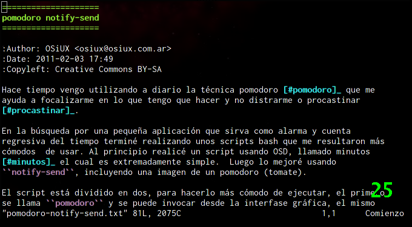

Técnica Pomodoro, mostrar minutos mediante OSD (On Screen Display)
ABSOLUTELLY NO WARRANTY | CC-BY-SA | OSiUX | .git
Pomodoro Minutos OSD
Muchas veces cuando realizo una presentación o una charla me encuentro limitado por el tiempo y debe tener presente constantemente cuántos minutos me quedan para seguir hablando, debido a ello hice un simple script bash usando OSD (On Screen Display) que muestra los minutos restantes.
#!/bin/bash MM=25 if [ ! -z "$1" ] then MM=$1 fi for i in $(seq $MM -1 0) do osdctl -s $i" " sleep 60 done
Es necesario levantar el servicio osdsh al inicio de la sesión, lo
conveniente es agregarlo en el archivo .xinitrc.
exec osdsh -c green -p1 -a2 -o 2 -d 50 &
Luego para ejecutarlo basta invocar el nombre del script, en mi caso
minutos está ubicado en ~/bin/minutos y si no se especifica ningún
parámetro toma por defecto el valor 25 que es la duración de un pomodoro 1.

Una alternativa es usar notify-send 2.